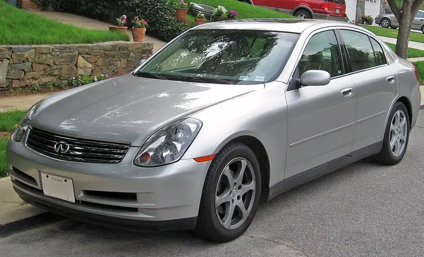
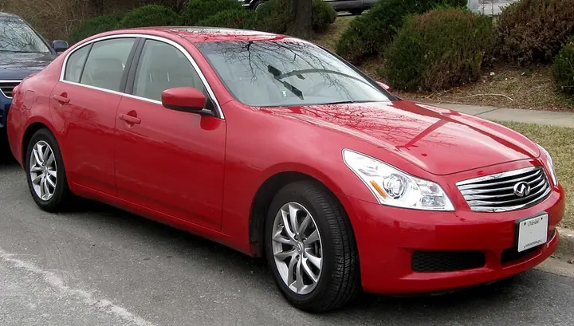
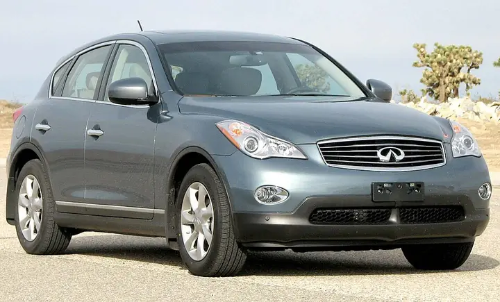
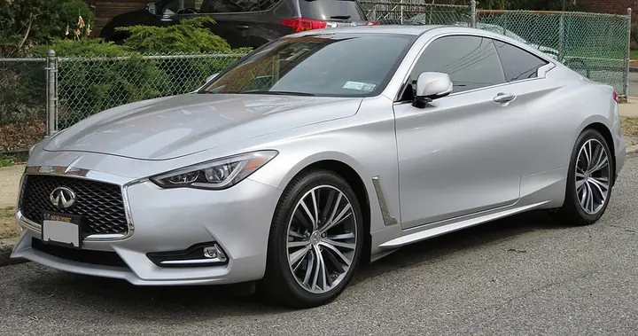

Platform
Nissan FM
17 generations of 13 models by Nissan, Infiniti and Mitsubishi, 2001–present.
The cars
- Nissan Skyline · Eleventh generation (V35; 2001)
- Nissan Stagea · Second generation (M35; 2001)

Infiniti G Line · Third generation (V35; 2002) Nissan 350Z
Nissan 350Z Nissan Z-car · Fifth generation: Nissan 350Z (Z33; 2002–2008)
Nissan Z-car · Fifth generation: Nissan 350Z (Z33; 2002–2008)
Infiniti G Line · Fourth generation (V36; 2007) Nissan Skyline · Twelfth generation (V36; 2006)
Nissan Skyline · Twelfth generation (V36; 2006)
Infiniti QX50 · First generation (J50; 2007) Nissan 370Z
Nissan 370Z Nissan Z-car · Sixth generation: Nissan 370Z (Z34; 2008–2021)
Nissan Z-car · Sixth generation: Nissan 370Z (Z34; 2008–2021) Mitsubishi Dignity · Second generation (BHGY51; 2012)
Mitsubishi Dignity · Second generation (BHGY51; 2012)- Mitsubishi Proudia · Second generation (BY51; 2012)
- Infiniti Q50
- Infiniti Q70

Infiniti Q60 · Second generation (V37; 2016) Nissan Z (RZ34)
Nissan Z (RZ34) Nissan Z-car · Seventh generation: Nissan Z (RZ34)
Nissan Z-car · Seventh generation: Nissan Z (RZ34)